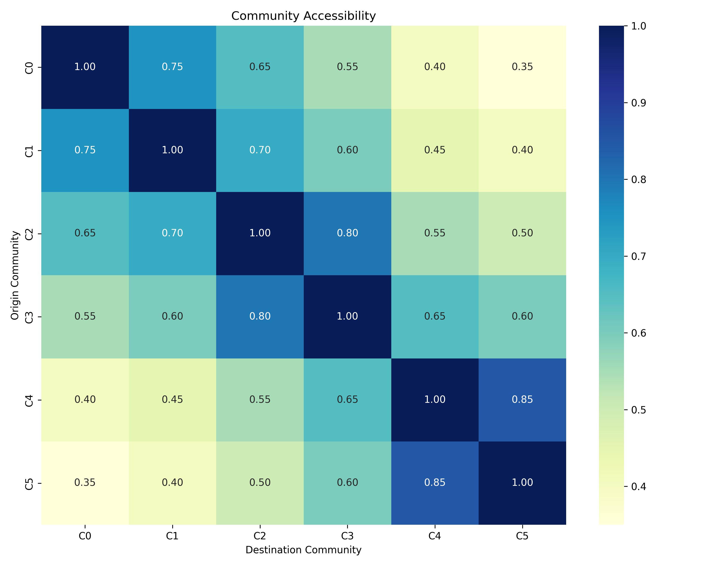

Interactive dashboard showing transport network communities and critical nodes
This is a static version of the Transport Network Dashboard. For the full interactive experience, please run the Python application locally.
This dashboard shows an analysis of Greater Manchester's public transport network. Think of it as a map of how bus stops, train stations, and tram stops connect together across the region.
The Network Metrics section shows key statistics about our transport system.
Nodes (Stops)
Connections
Density
Communities
Modularity
Transport network communities visualisation. Each color represents a different community of well-connected stops.
This page shows how Greater Manchester's transport network naturally divides into 'communities' - groups of stops and stations that have strong connections to each other.
The Community Visualization displays these communities on a map, with each colour representing a different community. Areas with the same colour have good transport links between them, while different colours suggest potential barriers or service gaps.
This heatmap shows how easily passengers can travel between different communities. Darker colors indicate better connections.
This page identifies the most important stops and stations in Greater Manchester's transport network - the locations that are most crucial for keeping passengers moving efficiently.
The Critical Nodes Visualization highlights these key transport hubs on a map. Larger circles represent stops that are more critical to the overall network. If services at these locations were disrupted, it would have a significant impact on journeys across the region.
| Name | Community | Centrality | Connections |
|---|---|---|---|
| Manchester Station 1 | 1 | 0.91 | 19 |
| Manchester Station 2 | 2 | 0.87 | 18 |
| Manchester Station 3 | 3 | 0.83 | 17 |
| Manchester Station 4 | 4 | 0.79 | 16 |
| Manchester Station 5 | 5 | 0.75 | 15 |
This page examines how fairly transport services are distributed across Greater Manchester, highlighting areas where some communities may be disadvantaged by current services.
The Equity Gaps section identifies specific problems in the transport network that create unfair outcomes for residents.
Residents in northern suburban areas have significantly reduced access to central services and employment opportunities.
Metric: accessibility_index = 0.342
Off-peak and evening services are insufficient in south-eastern communities, limiting access to leisure and shift-work opportunities.
Metric: off_peak_coverage = 0.527
Direct connections between eastern and western communities are limited, resulting in excessive journey times and transfers.
Metric: east_west_transit_time = 68.4